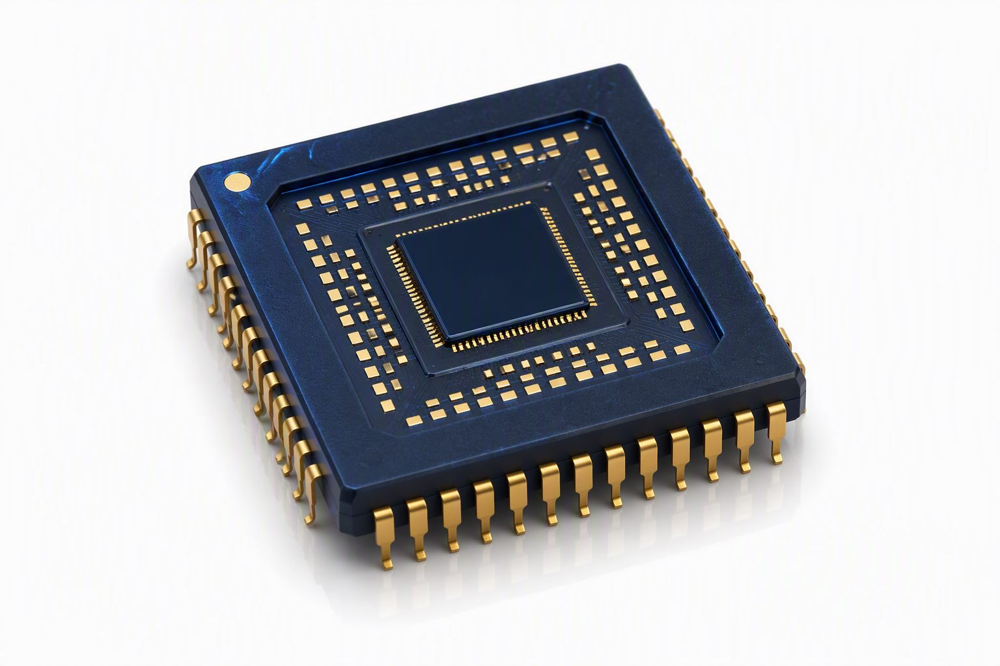
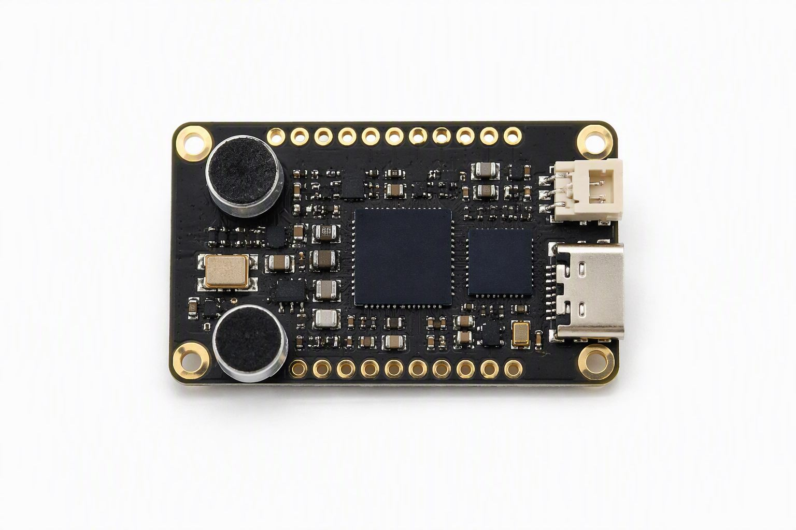
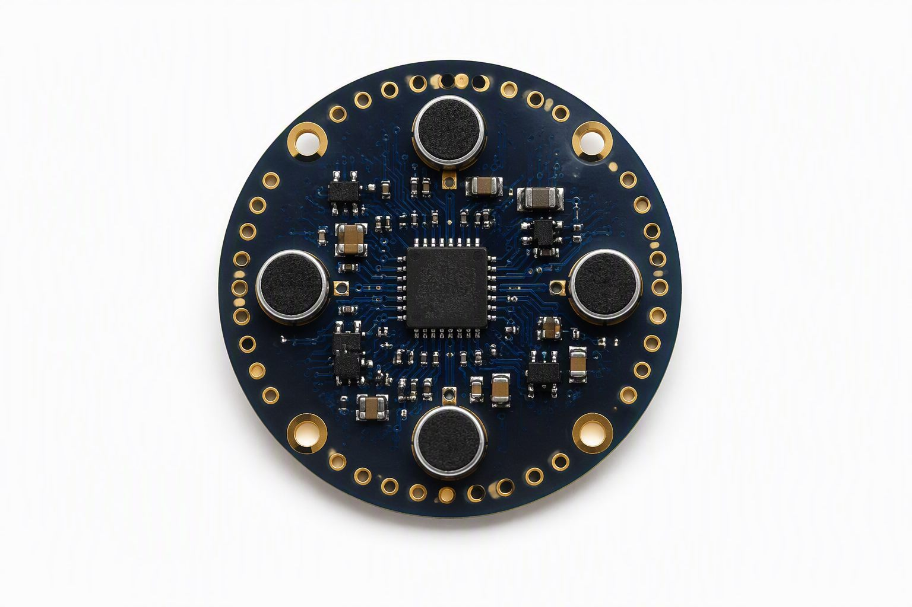
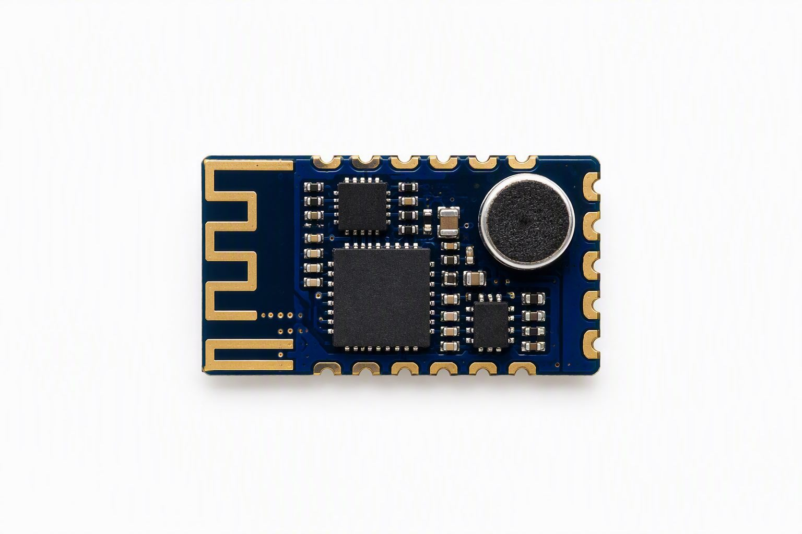
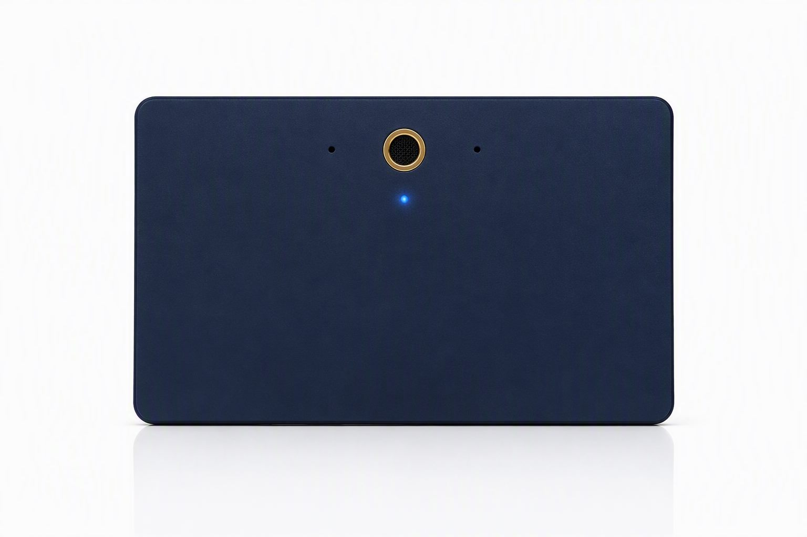
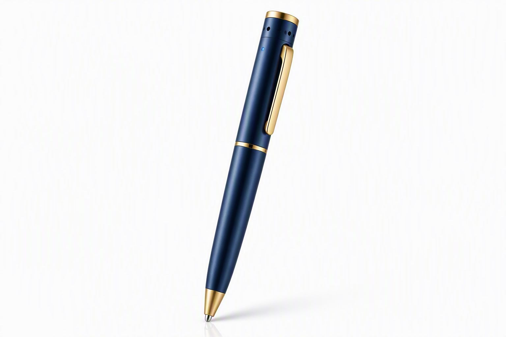
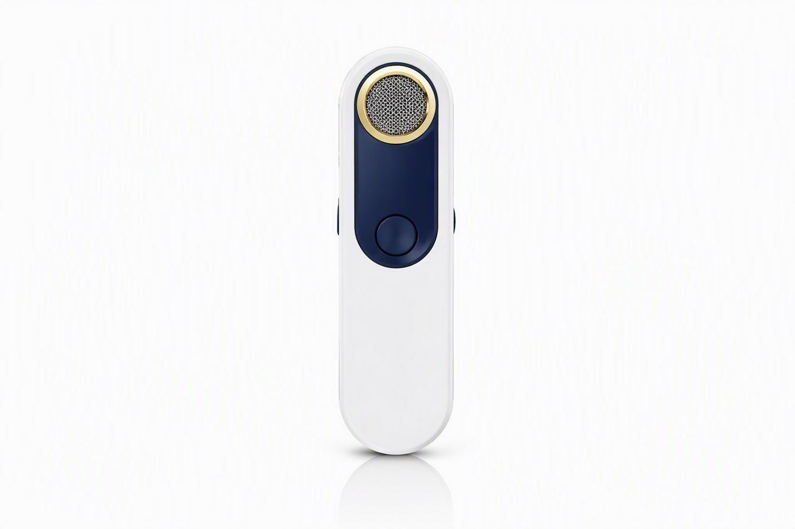

AI 录音芯片AI Recording Chips
VX-100 / VX-200 两颗主力：一颗堆满性能，一颗极致省电。提供 LQFP 封装与 QFN 封装，附开发板与 SDK。Two workhorses: VX-100 maxes performance, VX-200 sips power. LQFP & QFN packages, dev board + SDK included.
查看芯片规格View Chip Specs芯片、模组、成品三层递进：整机厂按规格选型，消费者按体验购买。Chips, modules, devices — OEMs select by spec, consumers buy by experience.
VX-100 / VX-200 两颗主力：一颗堆满性能，一颗极致省电。提供 LQFP 封装与 QFN 封装，附开发板与 SDK。Two workhorses: VX-100 maxes performance, VX-200 sips power. LQFP & QFN packages, dev board + SDK included.
查看芯片规格View Chip Specs录音笔模组与会议转写模组：板载双麦克风阵列、存储与电源管理，一颗模组即核心主板。Recorder and meeting modules: onboard dual-mic array, storage and PMIC — a module is already the core board.
查看模组View Modules自有品牌智能录音卡与录音笔：离线转写、双麦阵列降噪、本地加密。也接受整机厂 ODM 贴牌定制。Own-brand smart recorder cards and devices: offline transcription, dual-mic array noise reduction, local encryption. ODM white-label welcome.
看成品See Devices
面向高端录音笔与会议设备：NPU 4 TOPS 让离线转写在本地完成，隐私数据永不离开设备。Built for premium recorders and meeting devices: a 4 TOPS NPU runs ASR fully on-device, so sensitive audio never leaves the hardware.
| 参数Spec | VX-100 |
|---|---|
| 处理器CPU | 双核 Cortex-A55 @1.4GHz + DSP |
| AI 算力NPU | 4 TOPS（离线 ASR / 语义理解） |
| 音频前端Audio Front-end | 双麦阵列 · 32kHz/24bit · 智能降噪 |
| 转写语言ASR Languages | 中文 / 英语 / 日语 / 韩语（离线） |
| 存储Memory | 支持 eMMC / SD / SPI NOR 引导 |
| 功耗Power | 录音态 260mW · 待机 1.5mW |
| 封装Package | LQFP-144 · QFN-88 · 工作温度 -20~85℃-20~85°C |
| 典型应用Use Cases | 高端录音笔 · 会议音箱 · 翻译笔Premium recorder · meeting speaker · translation pen |
为电池驱动设备而生：一颗纽扣电池驱动的耳机/穿戴也能连续录音数小时并完成语义转写。Made for battery-driven devices: a coin cell can power continuous recording for hours with on-device semantic transcription.
| 参数Spec | VX-200 |
|---|---|
| 处理器CPU | Cortex-A7 @800MHz + 低功耗 DSP |
| AI 算力NPU | 0.6 TOPS（录音 / 降噪 / 语义标签） |
| 典型功耗Typical Power | 45mW（录音+转写）· 待机 0.8mW |
| 音频Audio | 单/双麦 · 16kHz/24bit · 环境自适应 |
| 转写语言ASR Languages | 中文 / 英语（离线） |
| 封装Package | QFN-48 · 6×6mm · -20~85℃-20~85°C |
| 典型应用Use Cases | 穿戴录音 · 助听附件 · 对讲耳机Wearable recorder · hearing aid add-on · intercom earbuds |

预集成麦克风阵列、存储与电源管理，整机厂两周内完成样机集成。Pre-integrated mic array, storage and PMIC — OEMs go from eval to prototype in two weeks.

双麦阵列 + 32GB eMMC + 扬声器驱动，BOM 精简到 18 颗料。Dual-mic array, 32GB eMMC, speaker driver — BOM trimmed to just 18 parts.

四麦环形阵列，360° 拾音 + 声源定位，自带角色分离转写引擎。Quad-mic ring array, 360° capture with source localization, built-in diarization ASR engine.

按产品外形定制尺寸、接口与外围：助听、对讲、翻译笔、车载记录都能做。Custom size, interface and peripherals per product: hearing aids, intercoms, translation pens, in-car recorders.
了解定制流程Custom Process自有品牌录音笔：课堂、会议、采访随身记录，离线即转，隐私本地保存。Own-brand recorders for class, meetings and interviews — transcribe offline, store privately.

银行卡大小的超薄录音卡：双麦阵列、离线转写、48 小时待机，塞进钱包就能取证。Bank-card-thin recording card: dual-mic array, offline ASR, 48h standby — slips into a wallet, ready for evidence capture.

双麦降噪 · 离线转写 · 16GB 本地存储 · 18 小时续航 · 全金属机身。Dual-mic noise reduction, offline ASR, 16GB storage, 18h battery, full-metal body.

卡片大小 · 一键录音 · 语音标签 · 48 小时待机，随身采访轻装上阵。Card-size, one-touch record, voice tagging, 48h standby — pocket interview buddy.
购买 / 经销咨询Buy / Distributor把应用场景发给我们，FAE 帮你做选型与功耗评估。Send us your use case — FAE handles selection and power budgeting.
留下需求，销售工程师 24 小时内回复